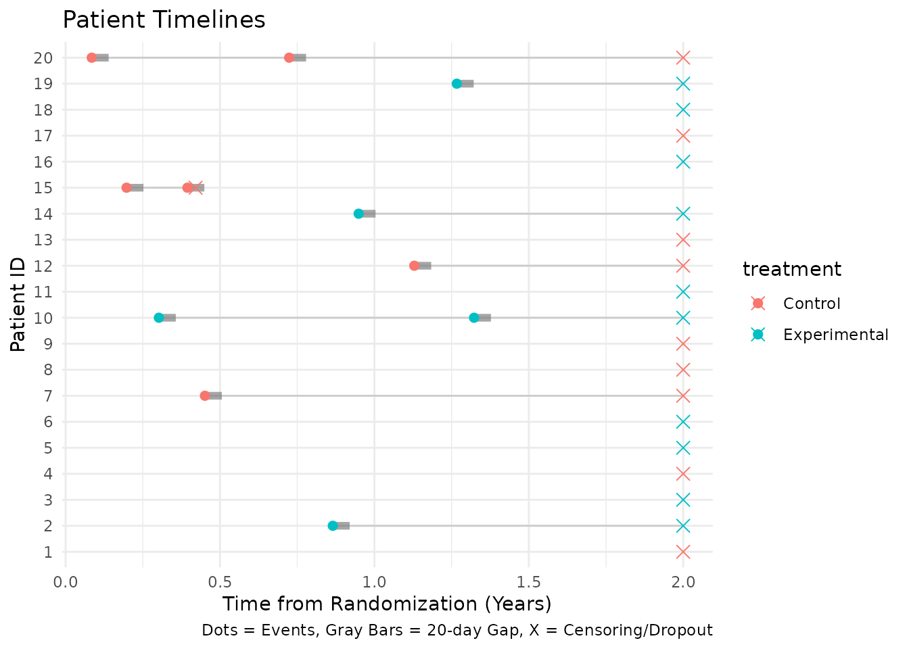
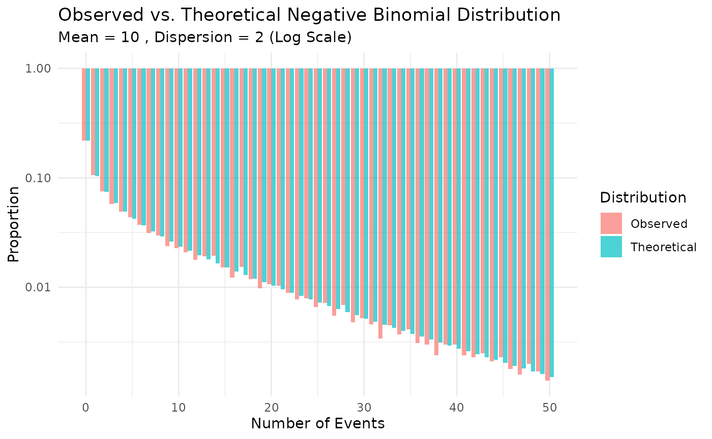

This vignette demonstrates how to use the nb_sim()
function to simulate a 2-arm clinical trial with recurrent event
outcomes.
Simulation setup
We will simulate a small trial with the following parameters:
- Enrollment: 20 patients total, recruited over 5 months with a constant rate.
- Treatments: Two groups (Control vs. Experimental) with a 1:1 allocation ratio.
-
Event Rates:
- Control: 0.5 events per year.
- Experimental: 0.3 events per year.
-
Dropout:
- Control: 10% annual dropout rate.
- Experimental: 5% annual dropout rate.
- Maximum Follow-up: Each patient is followed for a maximum of 2 years from randomization.
Defining input parameters
# Enrollment: rate of 4 patients/month for 5 months -> ~20 patients
enroll_rate <- data.frame(
rate = 4,
duration = 5
)
# Failure rates (events per unit time)
fail_rate <- data.frame(
treatment = c("Control", "Experimental"),
rate = c(0.5, 0.3) # events per year (assuming time unit is year, adjust enroll duration if needed)
)
# Let's ensure time units are consistent.
# If fail_rate is per year, then durations should be in years.
# 5 months = 5/12 years.
enroll_rate <- data.frame(
rate = 20 / (5 / 12), # 20 patients over 5/12 years
duration = 5 / 12
)
# Dropout rates (per year)
dropout_rate <- data.frame(
treatment = c("Control", "Experimental"),
rate = c(0.1, 0.05),
duration = c(100, 100) # constant rate for long duration
)
# Maximum follow-up per patient (years)
max_followup <- 2Running the simulation
set.seed(123)
sim_data <- nb_sim(
enroll_rate = enroll_rate,
fail_rate = fail_rate,
dropout_rate = dropout_rate,
max_followup = max_followup,
n = 20
)
head(sim_data)
#> id id treatment enroll_time tte calendar_time event
#> 1 1 1 Control 0.01757203 2.0000000 2.0175720 0
#> 2 2 2 Experimental 0.02958474 0.8651927 0.8947775 1
#> 3 2 2 Experimental 0.02958474 2.0000000 2.0295847 0
#> 4 3 3 Experimental 0.05727338 2.0000000 2.0572734 0
#> 5 4 4 Control 0.05793124 2.0000000 2.0579312 0
#> 6 5 5 Experimental 0.05910231 2.0000000 2.0591023 0The output contains multiple rows per subject:
-
event = 1: An actual recurrent event. -
event = 0: The censoring time (either due to dropout or reachingmax_followup).
Analyzing the data
We can aggregate the data to calculate the observed event rates and total follow-up time for each group.
sim_dt <- as.data.table(sim_data)
sim_dt[, censor_followup := ifelse(event == 0, tte, 0)]
summary_stats <- sim_dt[
,
.(
n_subjects = uniqueN(id),
total_events = sum(event == 1),
total_followup = sum(censor_followup),
observed_rate = sum(event == 1) / sum(censor_followup)
),
by = treatment
]
summary_stats |>
lt() |>
lt_header(title = "Summary Statistics by Treatment") |>
lt_label(
treatment = "Treatment",
n_subjects = "N",
total_events = "Events",
total_followup = "Follow-up",
observed_rate = "Rate"
) |>
lt_format(columns = "total_followup", decimals = 2) |>
lt_format(columns = "observed_rate", decimals = 3)Inspect first ten records
Before plotting, we can look at the first ten records from the simulated dataset.
head(sim_data, 10)
#> id id treatment enroll_time tte calendar_time event
#> 1 1 1 Control 0.01757203 2.0000000 2.0175720 0
#> 2 2 2 Experimental 0.02958474 0.8651927 0.8947775 1
#> 3 2 2 Experimental 0.02958474 2.0000000 2.0295847 0
#> 4 3 3 Experimental 0.05727338 2.0000000 2.0572734 0
#> 5 4 4 Control 0.05793124 2.0000000 2.0579312 0
#> 6 5 5 Experimental 0.05910231 2.0000000 2.0591023 0
#> 7 6 6 Experimental 0.06569608 2.0000000 2.0656961 0
#> 8 7 7 Control 0.07224248 0.4510840 0.5233265 1
#> 9 7 7 Control 0.07224248 2.0000000 2.0722425 0
#> 10 8 8 Control 0.07526888 2.0000000 2.0752689 0Plotting events
We can visualize the events and censoring times for each subject. To
avoid any side-effects from data.table, we convert the
dataset back to a plain data frame. We also display an event gap after
each event where no new events can be recorded. For illustration
purposes in this plot, we show a 20-day gap so it is
visible on the timeline.
sim_plot <- as.data.frame(sim_data)
names(sim_plot) <- make.names(names(sim_plot), unique = TRUE)
events_df <- sim_plot[sim_plot$event == 1, ]
censor_df <- sim_plot[sim_plot$event == 0, ]
# Define a 20-day gap for visualization
gap_duration <- 20 / 365.25
# Create segments for the gap after each event
events_df$gap_start <- events_df$tte
events_df$gap_end <- events_df$tte + gap_duration
ggplot(sim_plot, aes(x = tte, y = factor(id), color = treatment)) +
geom_line(aes(group = id), color = "gray80") +
# Add gap segments
geom_segment(
data = events_df,
aes(x = gap_start, xend = gap_end, y = factor(id), yend = factor(id)),
color = "gray50", linewidth = 2, alpha = 0.7
) +
geom_point(data = events_df, shape = 19, size = 2) +
geom_point(data = censor_df, shape = 4, size = 3) +
labs(
title = "Patient Timelines",
x = "Time from Randomization (Years)",
y = "Patient ID",
caption = "Dots = Events, Gray Bars = 20-day Gap, X = Censoring/Dropout"
) +
theme_minimal()
Cutting data by analysis date
We can truncate the simulated data at an interim analysis date using
cut_data_by_date(). The function returns a single record
per participant with the truncated follow-up time (tte) and
number of observed events. By default, no gap
(event_gap = 0) is applied after each event. If a positive
event_gap is used, no new events are counted during that
gap, and this time is excluded from time at risk.
cut_summary <- cut_data_by_date(sim_data, cut_date = 1.5)
head(cut_summary)
#> id treatment enroll_time tte tte_total events
#> 1 1 Control 0.01757203 1.482428 1.482428 0
#> 2 2 Experimental 0.02958474 1.470415 1.470415 1
#> 3 3 Experimental 0.05727338 1.442727 1.442727 0
#> 4 4 Control 0.05793124 1.442069 1.442069 0
#> 5 5 Experimental 0.05910231 1.440898 1.440898 0
#> 6 6 Experimental 0.06569608 1.434304 1.434304 0Missing data assumptions and imputation
The primary analysis in gsDesignNB is an observed-data
rate analysis: each participant contributes the recurrent events
observed before the analysis cut and the corresponding exposure time. In
mutze_test(), this appears as a negative binomial or
Poisson log-rate model with offset(log(tte)); unobserved
future events after censoring are not filled in.
Under the current estimand and model, missing at random (MAR) censoring does not by itself require multiple imputation (MI). Rubin’s ignorability result states that, for direct likelihood or Bayesian inference, the missing-data process can be ignored when the data are MAR and the parameters governing missingness are distinct from the outcome-model parameters (Rubin 1976). For this package, the practical reading is:
- if dropout or administrative censoring is independent of future unobserved event burden after conditioning on the variables and histories represented in the analysis model, use the observed events and observed exposure;
- do not discard partially followed participants, since their observed events and exposure remain informative;
- MI under MAR is optional as a modeling or reporting strategy, not a requirement for valid point estimates and standard errors from a correctly specified observed-data likelihood.
This statement is narrower than saying that any available-case analysis is valid under MAR. If MAR depends on auxiliary covariates, prior event history, center, season, adherence, or other observed predictors that are not represented in the analysis, those variables should be added to the analysis, used in an inverse probability weighting model, or used in a compatible imputation model. A complete-case analysis of only subjects with full follow-up is generally a different and less efficient analysis, and may be biased when incomplete participants differ from completers.
For missing not at random (MNAR), the missing future event process is not identified from observed data alone. Imputation can be useful, but only as part of an explicit sensitivity analysis (National Research Council 2010). For recurrent events, Keene et al. provide a directly relevant controlled-imputation framework using a negative multinomial formulation compatible with a Gamma-Poisson / negative binomial recurrent-event model (Keene et al. 2014). Their reference-based approach, such as borrowing control-arm event behaviour for active-arm dropouts, targets de facto sensitivity estimands rather than replacing the MAR primary analysis. A future MNAR MI routine for this package should first preserve enough information to define what is missing:
- record the censoring reason, such as dropout, administrative cut, maximum follow-up, or analysis cut;
- keep the planned follow-up horizon so the unobserved exposure window after dropout can be calculated;
- include observed predictors of both dropout and event burden, such as treatment, observed events, observed exposure, season, enrollment time, and dropout reason.
An MNAR imputation model should then impute post-dropout
recurrent-event counts or event times from a negative binomial
recurrent-event model with an exposure offset. Sensitivity parameters
can shift the post-dropout event rate, for example by using
treatment-specific multipliers
\lambda_post = \lambda_model * exp(delta_g), or can impose
reference-based rules such as jump-to-reference or copy-reference.
Running a grid of assumptions gives a tipping-point or pattern-mixture
sensitivity analysis. Each imputed dataset should be analyzed with the
same mutze_test() estimand, with variance estimation
specified and checked as part of the sensitivity analysis. If
event_gap is important, imputing event times rather than
only total counts is preferable so at-risk time after events is handled
consistently.
Wald test (Mütze et al. 2019)
Using the truncated data we can run a negative binomial Wald test as described by Mütze et al. (2019).
mutze_res <- mutze_test(cut_summary)
mutze_res
#> Mutze Test Results
#> ==================
#>
#> Method: Negative binomial Wald
#> Estimate: -0.6217
#> SE: 0.7812
#> Z: -0.7958
#> p-value: 0.2131
#> Rate Ratio: 0.5370
#> CI (95%): [0.1161, 2.4831]
#> Dispersion: 0.9530
#>
#> Group Summary:
#> treatment subjects events exposure
#> Control 10 6 12.66322
#> Experimental 10 4 13.63050Finding analysis date for target events
Often we want to perform an interim analysis not at a fixed calendar
date, but when a specific number of events have accumulated. We can find
this date using get_analysis_date() and then cut the data
accordingly. This function also respects the event_gap
(defaulting to 5 days).
# Target 15 total events
target_events <- 15
analysis_date <- get_analysis_date(sim_data, planned_events = target_events)
#> Only 11 events in trial
print(paste("Calendar date for", target_events, "events:", round(analysis_date, 3)))
#> [1] "Calendar date for 15 events: 2.338"
# Cut data at this date
cut_events <- cut_data_by_date(sim_data, cut_date = analysis_date)
# Verify event count
sum(cut_events$events)
#> [1] 11Generating and verifying negative binomial data
The nb_sim() function can also generate data where the
counts follow a negative binomial distribution. This is achieved by
providing a dispersion parameter in the
fail_rate data frame. The dispersion parameter \(k\) relates the variance to the mean as
\(Var(Y) = \mu + k\mu^2\).
Simulation with dispersion
We define a scenario with a known dispersion of 0.5.
# Define failure rates with dispersion
fail_rate_nb <- data.frame(
treatment = "Control",
rate = 10, # Mean event rate
dispersion = 2 # Variance = mean + 2 * mean^2
)
enroll_rate_nb <- data.frame(
rate = 100,
duration = 1
)
set.seed(1)
# Simulate 10000 subjects for a quick local review build
sim_nb <- nb_sim(
enroll_rate = enroll_rate_nb,
fail_rate = fail_rate_nb,
max_followup = 1,
n = 10000,
block = "Control" # Assign all to Control for simplicity
)Verifying the dispersion parameter
We can verify that the simulated data reflects the input dispersion parameter by estimating it back from the data. We use the Method of Moments (MoM) estimator:
\[ \hat{k} = \frac{Var(Y) - \bar{Y}}{\bar{Y}^2} \]
# Count events per subject
counts_nb <- as.data.table(sim_nb)[, .(events = sum(event)), by = id]
m <- mean(counts_nb$events)
v <- var(counts_nb$events)
k_mom <- (v - m) / (m^2)
# Theoretical values
mu_true <- 10
k_true <- 2
v_true <- mu_true + k_true * mu_true^2
# Also estimate using GLM
# We use MASS::glm.nb to fit the negative binomial model
# We suppress warnings because fitting intercept-only models on simulated data
# can occasionally produce convergence warnings despite valid estimates.
k_glm <- tryCatch(
{
fit <- suppressWarnings(MASS::glm.nb(events ~ 1, data = counts_nb))
1 / fit$theta
},
error = function(e) NA
)
print(paste("True Mean:", mu_true, "| Observed Mean:", signif(m, 4)))
#> [1] "True Mean: 10 | Observed Mean: 9.968"
print(paste("True Variance:", v_true, "| Observed Variance:", signif(v, 4)))
#> [1] "True Variance: 210 | Observed Variance: 212.9"
print(paste("True Dispersion:", k_true))
#> [1] "True Dispersion: 2"
print(paste("Estimated Dispersion (MoM):", signif(k_mom, 4)))
#> [1] "Estimated Dispersion (MoM): 2.042"
print(paste("Estimated Dispersion (GLM):", signif(k_glm, 4)))
#> [1] "Estimated Dispersion (GLM): 2.018"Visualizing the distribution
We can compare the observed distribution of event counts to the theoretical negative binomial distribution.
# Calculate observed proportions
obs_dist <- counts_nb[, .N, by = events]
obs_dist[, prop := N / sum(N)]
obs_dist[, type := "Observed"]
# Calculate theoretical probabilities
# Parameters: mu = 10, size = 1/k = 1/2 = 0.5
mu <- 10
k <- 2
size <- 1/k
max_events <- max(obs_dist$events)
theo_probs <- dnbinom(0:max_events, size = size, mu = mu)
theo_dist <- data.table(
events = 0:max_events,
N = NA,
prop = theo_probs,
type = "Theoretical"
)
# Combine for plotting
plot_data <- rbind(obs_dist, theo_dist)
# Filter for visualization (limit x-axis to 50)
plot_data <- plot_data[events <= 50]
# Plot
ggplot(plot_data, aes(x = events, y = prop, fill = type)) +
geom_bar(stat = "identity", position = "dodge", alpha = 0.7) +
scale_y_log10(labels = scales::label_number()) +
labs(
title = "Observed vs. Theoretical Negative Binomial Distribution",
subtitle = paste("Mean =", mu, ", Dispersion =", k, "(Log Scale)"),
x = "Number of Events",
y = "Proportion",
fill = "Distribution"
) +
theme_minimal()